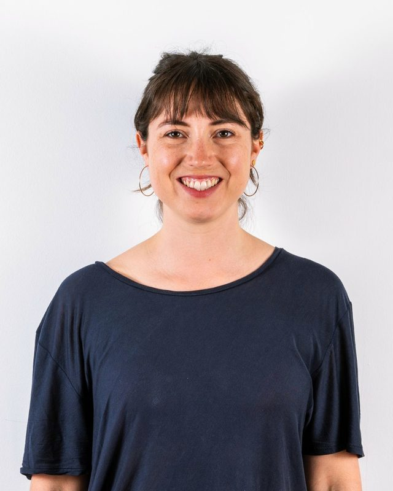

Anna Gassner, MSc
Beckenbodenphysiotherapie (MSc)
„Ich begleite dich auf dem Weg, deinen eigenen Körper besser kennenzulernen und zu verstehen. Ich freue mich darauf, dir zu helfen, dein volles Potential auszuschöpfen.“
Beckenbodenphysiotherapie (MSc) · Orthopädische & traumatologische Rehabilitation · Blackroll-Trainerin · Faszienyoga · Therapieklettern · Manuelle Lymphdrainage